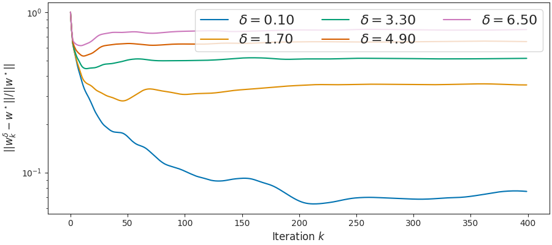

Note
Click here to download the full example code
Show existence of stopping time¶
This is for L1 regression.
Out:
usetex mode requires TeX.
0.1
1.7000000000000002
3.3000000000000003
4.9
6.5
import numpy as np
import matplotlib.pyplot as plt
from numpy.linalg import norm
from sklearn.linear_model import LassoLars
from joblib import Parallel, delayed
from iterreg.sparse import dual_primal
from iterreg.utils import make_sparse_data
from celer.plot_utils import configure_plt
configure_plt()
n, d = 200, 500
s = 75
rho = 0.2
np.random.seed(12)
X, y, w0 = make_sparse_data(
n, d, s=s, rho=rho, snr=None, w_type="ones", normalize=True)
scal = 20 / norm(y)
y *= scal
clf = LassoLars(alpha=1e-20, fit_intercept=False)
clf.fit(X, y)
w_bp = clf.coef_
def wrapper(X, y, delta, max_iter, f_store, rep):
print(delta, rep)
np.random.seed(rep)
noise = np.random.randn(y.shape[0])
y_noise = y + delta * noise / norm(noise)
all_w = dual_primal(
X, y_noise, step=1, max_iter=max_iter, f_store=f_store,
verbose=False)[-1]
return all_w
all_wdict = dict()
max_iter = 5_000
n_deltas = 5
deltas = np.linspace(0.1, 6.5, num=n_deltas)
np.random.seed(1)
n_reps = 1
res = np.zeros([n_deltas, n_reps])
for i, delta in enumerate(deltas):
print(delta)
all_w_rep = np.array(Parallel(n_jobs=-1)(delayed(wrapper)(
X, y, delta, max_iter, 1, rep)
for rep in range(n_reps)))
all_wdict[delta] = all_w_rep[:1].copy()
for rep in range(n_reps):
res[i, rep] = np.argmin(norm(all_w_rep[rep] - w_bp, axis=1))
del all_w_rep
fig3, ax = plt.subplots(constrained_layout=True, figsize=(9, 4))
n_points = 400
for delta in deltas:
x_plt = np.arange(len(all_wdict[delta][0]))
y_plt = norm(all_wdict[delta][0] - w_bp, axis=1) / norm(w_bp)
ax.semilogy(x_plt[:n_points], y_plt[:n_points],
label=r"$\delta={:.2f}$".format(delta))
ax.set_ylabel(r'$||w^\delta_k - w^\star||/ ||w^\star||$')
ax.set_xlabel("Iteration $k$")
plt.legend(ncol=3, fontsize=16, loc='upper right')
plt.show(block=False)
Total running time of the script: ( 0 minutes 17.362 seconds)